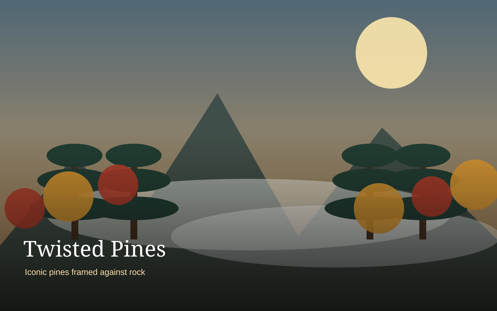
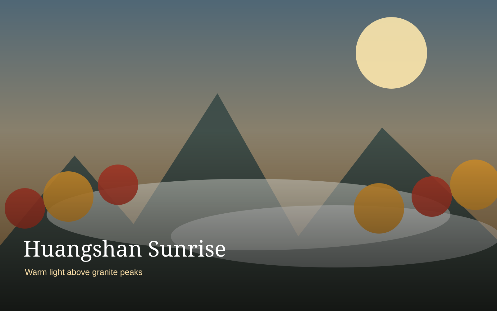
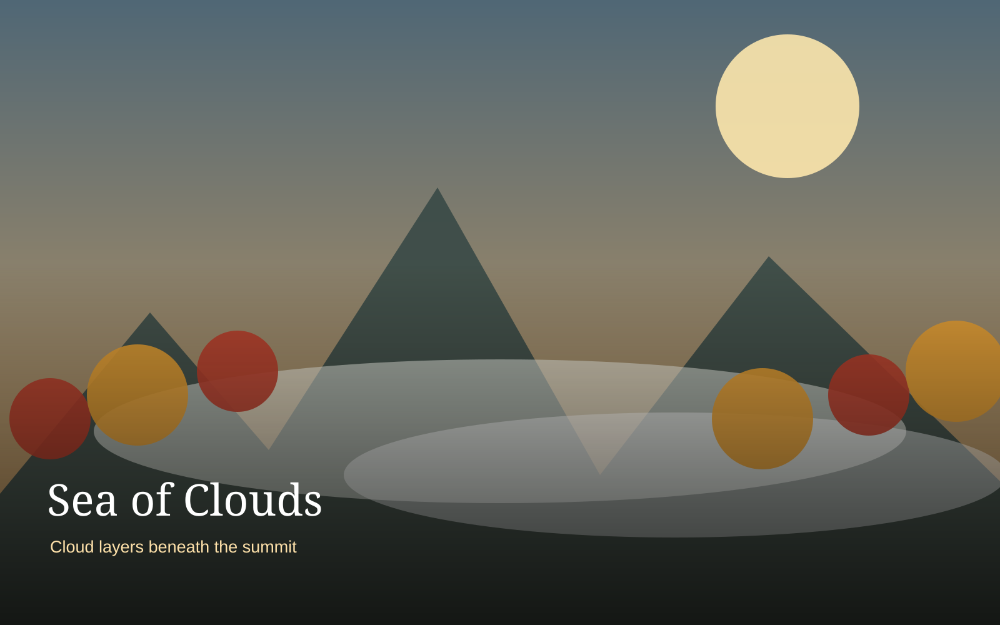
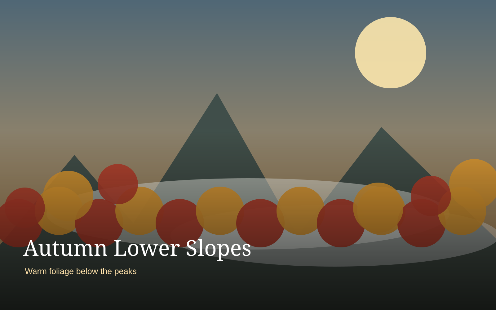

Regional Arrival
Travel to the Huangshan region and prepare clothing and luggage for the mountain.
3 nights
Huangshan is the scenic centerpiece. The itinerary protects enough time for changing weather, a mountain overnight, sunset, and an optional sunrise.
Each image opens its Wikimedia Commons source and license page.




Travel to the Huangshan region and prepare clothing and luggage for the mountain.
Use the cable car, explore selected viewpoints, and remain for sunset.
Optional sunrise, breakfast, descent, and Hongcun later in the day.
Reduces strenuous climbing and preserves energy for viewpoints.
The signature scenery of Huangshan.
Weather-dependent but worth planning around.
Attempt only if conditions and energy are suitable.
The best-known Huizhou regional specialty.
Fermented tofu for more adventurous diners.
A classic mountain ingredient.
A compact savory snack for travel days.
Color varies strongly by elevation. Lower slopes may retain warm foliage while mountaintop areas can already feel wintry.
A comfortable regional base plus one mountain night balances luxury with sunrise access.
Verify the exact branch, opening hours, and current reviews before travel.
Try: Comfortable Huizhou dinner
Typical cost: ¥150–¥300/person
Try: Practical mountain dinner and breakfast
Typical cost: ¥80–¥180/person
Try: Stinky mandarin fish and bamboo shoots
Typical cost: ¥100–¥220/person
Use these as flexible recovery points rather than fixed reservations. They help keep the itinerary comfortable for the group.
Choose sealed packages.
Useful travel snack.
Buy only if the work genuinely appeals.
Arrive early with warm layers
Check hotel guidance for conditions
Use foreground pine branches
Weather-dependent